(1) Download the Liferay Portal 6.2 or greater (select tomcat bundled) ~281MB
reference :
https://www.liferay.com/downloads/liferay-portal/available-releases
(2) Download the Liferay SDK 6.2 or greater ~3MB
reference :
https://www.liferay.com/downloads/liferay-portal/available-releases
, http://sourceforge.net/projects/lportal/files/Liferay Portal/6.2.4 GA5/liferay-plugins-sdk-6.2-ce-ga5-20151118111117117.zip/download
(3) Create Liferay development workspace folder and Unzip all the files into the workspace
(4) Rename the liferay-portal-6.2-ce-ga4 server folder to bundles
(5) Setup the necessary paths and configurations in liferay-portal-6.2-ce-ga4 (bundles) server (Read more ... )
(6) Setting up Eclipse.
Download and install the Liferay IDE plugin for Eclipse or directly use the Liferay IDE
https://www.liferay.com/downloads/liferay-projects/liferay-ide
(7) Import Liferay SDK. (Window -> Preferences -> Liferay)
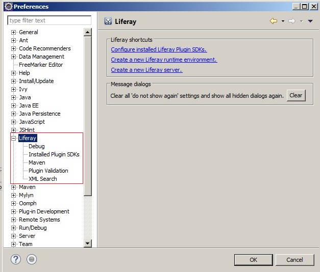
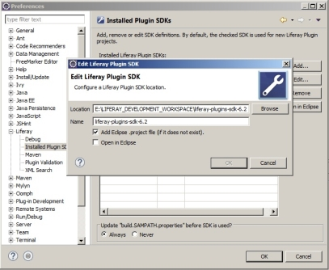
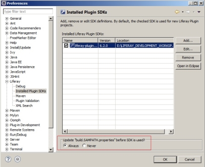
(8)Import the Liferay server
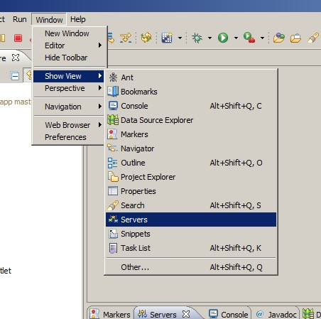
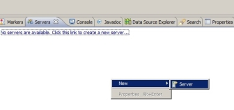
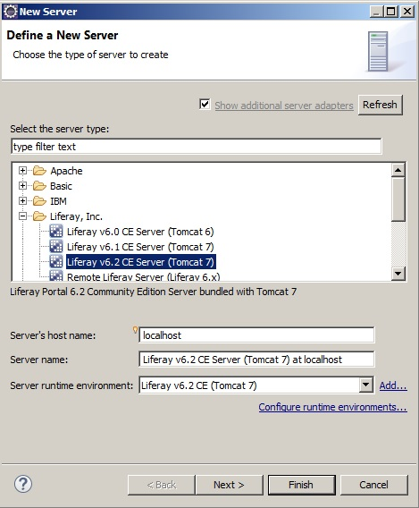
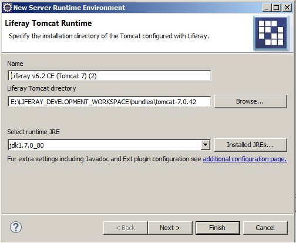
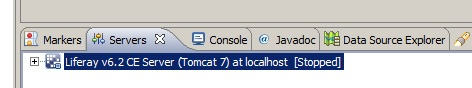
(9)Add following changes in Liferay Plugin SDK build.<
(10)Make sure following changes are available in the build.properties file 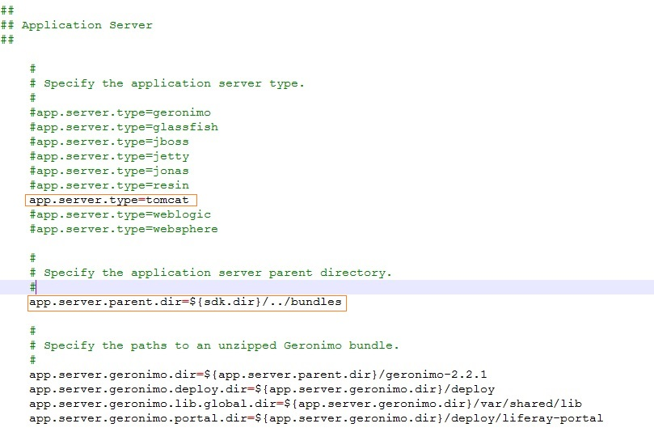
(11)Now you can start Liferay Plugin development in Eclipse
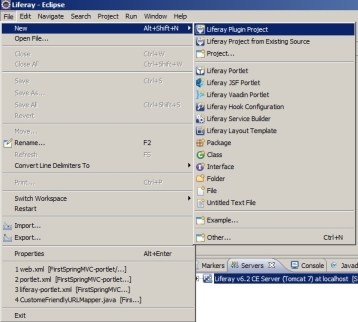
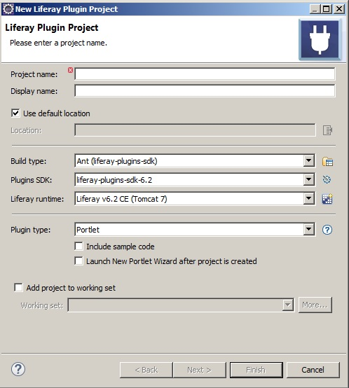